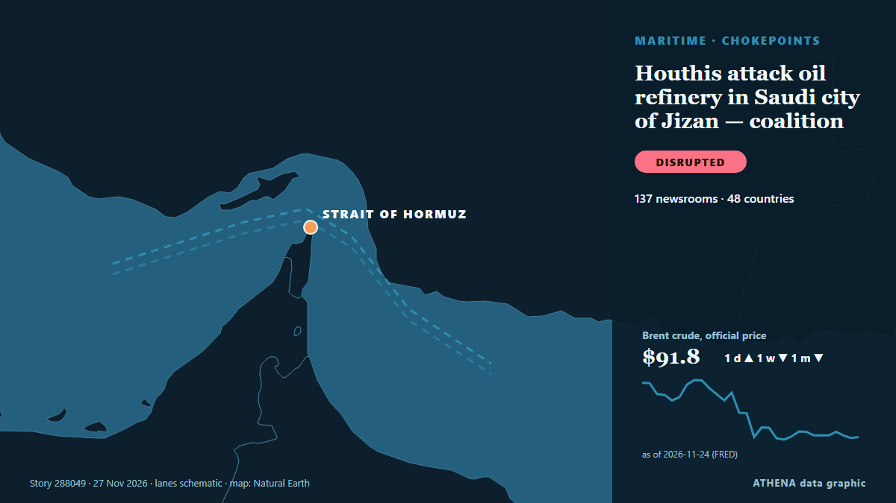

Houthis attack oil refinery in Saudi city of Jizan — coalition

The Saudi-led coalition command provided no information about possible casualties or material damage. από TASS (English)
Τι άλλαξε 24 νέες αναφορές από 23 μέσα τις τελευταίες 24 ώρες.
Δείτε τις πηγές ›Τεκμήριωση: Περιορισμένη
Αναφέρθηκε ανεξάρτητα από 137 μέσα σε 48 χώρες από τις 26 Οκτ, πρώτο το IranWire· η κάλυψη εξαπλώνεται ακόμη. Το ATHENA εκτιμά τον κίνδυνο υψηλό (7.1/10), κυρίως λόγω της σοβαρότητάς του και της εμβέλειάς του. Βεβαιότητα 64% (μέτρια): το επιβεβαιώνουν 137 ανεξάρτητα μέσα, μέση αξιοπιστία 74%. Μέσα ανά χώρα: Ιράν (31), Ηνωμένες Πολιτείες (4), Σαουδική Αραβία (2). Κάλυψη: 26 Οκτ έως 26 Νοε, 745 ώρες.
Γιατί έχει σημασία: Η Ερυθρά Θάλασσα και τα στενά Μπαμπ ελ-Μαντέμπ είναι η συντομότερη θαλάσσια οδός Ασίας–Ευρώπης, μέσω της Διώρυγας του Σουέζ. Οι επιθέσεις σε εμπορικά πλοία αναγκάζουν τις εταιρείες να παρακάμπτουν την Αφρική, με κόστος χρόνου και χρημάτων για το παγκόσμιο εμπόριο και τη ναυτιλία.
Τι άλλαξε: 24 νέες αναφορές από 23 μέσα στο 24ωρο έως 27 Νοε.
Πρώτη διατύπωση: American Heritage Captain, Crew and Tug Operators Hailed as Heroes After Mississippi River Capsizing
ΑυτοματοποιημένοΕπιλέχθηκε, ομαδοποιήθηκε και βαθμολογήθηκε με τη δημοσιευμένη μέθοδο της ATHENA από 9 ανεξάρτητα μέσα. Ο τίτλος είναι του μέσου· οι προτάσεις της ATHENA ακολουθούν σταθερά πρότυπα - δεν τις γράφει παραγωγική ΤΝ. Πώς λειτουργεί →
Πώς να διαβάσετε αυτή τη σελίδα
- Τι διαβάζετε
- 137 μέσα σε 48 χώρες ανέφεραν αυτό το γεγονός. Οι αναφορές παρακάτω εμφανίζονται με τη σειρά που δημοσιεύτηκαν· κάθε τίτλος ανοίγει το αρχικό άρθρο. Το ATHENA δεν γράφει δικά του ρεπορτάζ.
- Η εκτίμησή μας
- Για την καταγραφή — Οι αναφορές περιγράφουν ένα ολοκληρωμένο, εσωτερικό, εμπορικό ή προσωπικό ζήτημα. Το καταγράφουμε ώστε να βλέπετε ποιος το ανέφερε και πότε. Δεν παρακολουθούμε εδώ κίνδυνο ευρύτερης σύγκρουσης.
- Πόσα στοιχεία υπάρχουν
- Περιορισμένη Αντιμετωπίστε τη σελίδα ως πρώιμη αναφορά.
Αφού αφαιρεθούν οι επαναλήψεις, τα άσχετα και τα παλιά στοιχεία, υπολογίζονται 1 από τις 40 αναφορές που παρατίθενται· το 8% των τίτλων αντιστοιχεί στο γεγονός.
- Τι δεν σημαίνει
- Το ATHENA μετρά πώς καλύπτεται ένα γεγονός, όχι αν είναι αληθές. Δεν είναι πρόβλεψη, κρίση για το ποιος έχει δίκιο ή συμβουλή.
- Τι θα την άλλαζε
- Αναφορές από άλλα ανεξάρτητα μέσα που δείχνουν διαφορετική εξέλιξη, ή σαφής επιβεβαίωση ή διάψευση από επίσημη πηγή.
Εκτίμηση R2 · ανανεώνεται με κάθε ενημέρωση της σελίδας. Το ATHENA δεν έχει δημοσιεύσει ακόμη ιστορικό επιδόσεων για αυτές τις εκτιμήσεις· όταν το κάνει, θα συνδέεται εδώ.
Με μια ματιά
Επιλέγεται, βαθμολογείται και γράφεται από τη δημοσιευμένη μεθοδολογία του ATHENA. Κανένας συντάκτης δεν παρεμβαίνει σε μεμονωμένα γεγονότα. Πώς παράγεται ›
| 26 Oct 14:56 UTC | 3 |
|---|---|
| 28 Oct 14:56 UTC | 4 |
| 30 Oct 14:56 UTC | 1 |
| 01 Nov 14:56 UTC | 2 |
| 03 Nov 14:56 UTC | 4 |
| 05 Nov 14:56 UTC | 2 |
| 07 Nov 14:56 UTC | 2 |
| 09 Nov 14:56 UTC | 5 |
| 11 Nov 14:56 UTC | 5 |
| 13 Nov 14:56 UTC | 0 |
| 15 Nov 14:56 UTC | 8 |
| 17 Nov 14:56 UTC | 14 |
| 19 Nov 14:56 UTC | 80 |
| 21 Nov 14:56 UTC | 238 |
| 23 Nov 14:56 UTC | 142 |
| 25 Nov 14:56 UTC | 40 |
| 22 Nov 10:57 UTC | 7.1 |
|---|---|
| 22 Nov 13:35 UTC | 6.6 |
| 22 Nov 13:43 UTC | 7.2 |
| 22 Nov 13:48 UTC | 6.5 |
| 22 Nov 16:00 UTC | 7.2 |
| 22 Nov 16:51 UTC | 6.5 |
| 22 Nov 19:09 UTC | 7.2 |
| 22 Nov 19:14 UTC | 6.5 |
| 22 Nov 19:24 UTC | 7.2 |
| 22 Nov 21:23 UTC | 6.8 |
| 22 Nov 21:37 UTC | 7.4 |
| 22 Nov 21:42 UTC | 6.8 |
| 23 Nov 00:47 UTC | 7.4 |
| 23 Nov 00:58 UTC | 6.8 |
| 23 Nov 01:07 UTC | 7.4 |
| 23 Nov 03:08 UTC | 6.8 |
| 23 Nov 03:21 UTC | 7.6 |
| 23 Nov 03:34 UTC | 6.8 |
| 23 Nov 03:41 UTC | 7.5 |
| 23 Nov 03:51 UTC | 6.8 |
| 23 Nov 04:01 UTC | 7.5 |
| 23 Nov 08:32 UTC | 6.7 |
| 23 Nov 15:33 UTC | 7.8 |
| 23 Nov 17:12 UTC | 7.0 |
| 23 Nov 17:23 UTC | 7.6 |
| 23 Nov 17:48 UTC | 7.0 |
| 23 Nov 19:42 UTC | 7.6 |
| 23 Nov 20:36 UTC | 6.9 |
| 25 Nov 04:54 UTC | 7.4 |
| 25 Nov 05:51 UTC | 6.8 |
| 25 Nov 06:07 UTC | 7.3 |
| 25 Nov 08:25 UTC | 6.9 |
| 25 Nov 10:33 UTC | 7.4 |
| 25 Nov 10:45 UTC | 6.9 |
| 25 Nov 10:58 UTC | 7.4 |
| 25 Nov 20:36 UTC | 6.6 |
| 27 Nov 01:41 UTC | 7.1 |
Γιατί αυτοί οι αριθμοί
Σημασία
Πόσο πολύ και πόσο εμφανώς αναφέρεται η είδηση.
Κίνδυνος
Τι περιγράφουν οι αναφορές, βαθμολογημένο για πιθανή ζημιά. Δεν είναι πρόβλεψη.
Βεβαιότητα
Πόσο καλά την στηρίζουν οι ανεξάρτητες πηγές.
Εμφανίζεται 64% (υπολογισμός 87%): η αξιολόγηση τεκμηρίωσης είναι περιορισμένη, οπότε η βεβαιότητα κρατιέται στο μέτριο.
Η κάλυψη — ποιος το ανέφερε και πότε
ο τίτλος όπως δημοσιεύτηκε · ανοίγει το πρωτότυπο- IranWire · ΙράνIranian Navy Official Claims Missile Strike Damaged USS Abraham Lincoln Early in Conflict
- IranWire · ΙράνUS Military Prepared to Launch Iran Operations Within 96 Hours
- IranWire · ΙράνUS Warns Gulf Allies to Prepare for “Short and Intense” Strike on Iran Post-Midterms
- IranWire · ΙράνUS to Gulf States: Prepare for Short, Intense Strike on Iran
- IranWire · ΙράνIran YouTube Stories: China Offers Political Shield to Iran, Not a Military Umbrella
- IranWire · ΙράνCENTCOM Chief Presents Iran Military Options to Trump
- IranWire · ΙράνVance: Trump Will Not Allow Iran Conflict to Become Endless War
- IranWire · ΙράνTrump Predicts Near End to Iran War Without Offering Details
- IranWire · ΙράνTrump: “No Rush” to Resume Military Action Against Iran
- IranWire · ΙράνU.S. Media Confirms American Air Strikes on Iran’s Qeshm Island
- IranWire · ΙράνIran Rejects U.S. Negotiation Draft, Expands Threats to Europe
- IranWire · ΙράνTrump: Nuclear Weapons Not Needed Against Iran, Military Options Remain
- IranWire · ΙράνOil Ministry Confirms 25% Reduction in Iran’s Gas Production Capacity
- Rasanah IIIS · Σαουδική ΑραβίαIRAN IN A WEEK October 28-November 4, 2026
- IranWire · ΙράνOil Pollution Returns to Coasts of Qeshm and Hormuz Islands
- IranWire · ΙράνGlobal Oil Prices Drop Sharply Amid Reports of Potential Iran–U.S. Peace Talks
- IranWire · ΙράνTrump: Operation ‘Iron Gate’ in Iran Executed with Full Force
- IranWire · ΙράνPrices Fall at Opening Following Trump’s Remarks on Iran Negotiation Progress
- IranWire · ΙράνTrump Says Iran Conflict Nearing End, Warns U.S. Ready to Resume Strikes
- IranWire · ΙράνRubio: Economic Pressure Effective, Military Action Against Iran Unnecessary
- IranWire · ΙράνBeyond the Naval Siege: How the U.S. "Iron Gate" Strategy Aims to Choke Iran's Trade
- IranWire · ΙράνIran Labels Argentine Navy and Air Force as Terrorist Organizations
- IranWire · ΙράνUN Experts Warn Right to Legal Defence Under Attack in Iran
- IranWire · ΙράνTrump: We Seek Complete Victory in War With the Islamic Republic
- Rasanah IIIS · Σαουδική ΑραβίαIRAN IN A WEEK November 5-11, 2026
- IranWire · ΙράνIran Targets Maritime Navigation Systems on Omani Island in Strait of Hormuz
- IranWire · ΙράνTrump Threatens to Destroy Iran’s Energy Infrastructure and Factories Within Three Days
- IranWire · ΙράνIRGC Claims Liquefied Gas Carrier Hit Naval Mine and Exploded in Strait of Hormuz
- gCaptain · Ηνωμένες ΠολιτείεςAmerican Heritage Captain, Crew and Tug Operators Hailed as Heroes After Mississippi River Capsizing
- Simple Flying · Ηνωμένες ΠολιτείεςWhat A 2nd Captain Adds To The Cost Of American Airlines' 16-Hour JFK-Delhi Flight
- IranWire · ΙράνSirik: The Iranian Port Where Military Strategy and Civilian Lives Collide
- IranWire · ΙράνU.S. Embassy in Bahrain Issues Security Alert Over Iran Attacks
- The Rio Times · ΒραζιλίαArgentine Oil Operating Earnings Up 72%
- IranWire · ΙράνCNN: Iran May Be Planning Dirty Bomb Attack on Senior Trump Officials
- IranWire · ΙράνTrump Warns Iran Will Pay a Huge Price If It Attacks U.S. Soil
- The Maritime Executive · Ηνωμένες ΠολιτείεςHanwha Philly Cuts Steel for First New American MR Tankers
- IranWire · ΙράνIran Claims Drone Strike on U.S. Assets at Kuwait’s Ali Al Salem Base as Bahrain Intercepts Aerial Attacks
- Responsible Statecraft · Ηνωμένες ΠολιτείεςTom Friedman’s deceptive effort to lure Dems to escalate in Iran
- Israel Hayom (English) · ΙσραήλTrump weighs Iran strike options, including attacks on regime leadership
- TASS (English) · ΡωσίαHouthis attack oil refinery in Saudi city of Jizan — coalition